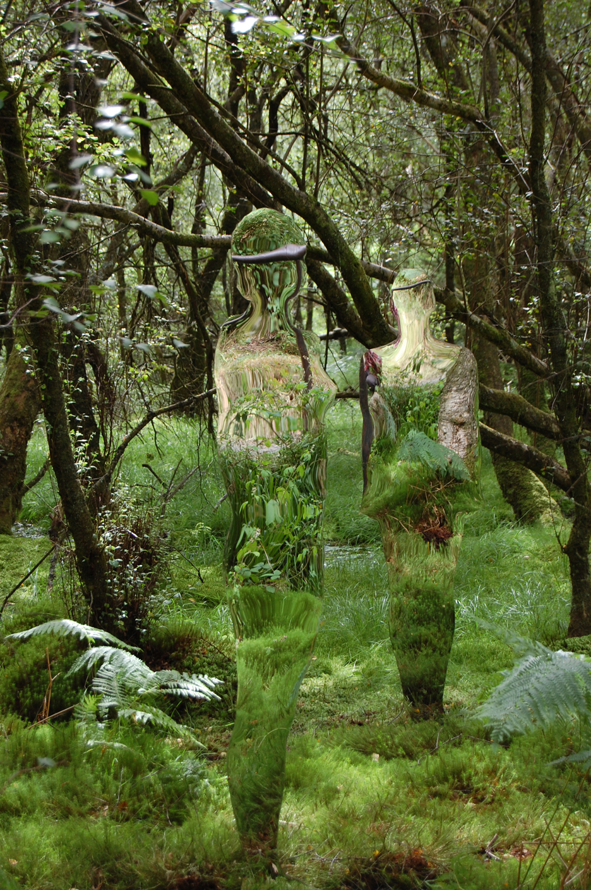

From urban jungle
to living forest
Open Forest will transform Liverpool Street Station, a symbol of London’s industrialisation, into a symbol
of a bright and beautiful future. Imagine you look up on your daily commute to see a roof full of greenery,
you look a little closer and see installation art from some of London’s most thought-provoking artists,
suddenly everything is different.
We are uniting for something bigger than our differences
MISKE believes nature is the key to life, in this non-stop urban jungle it is more important than ever to
not lose touch of the earth we came from, and to which we will all eventually return.
MISKE believes that nature has the power to unite people, to bring a community together, to inspire us to
make positive green change, permanently.
MISKE believes art cannot exist behind walls, it is all around us, in everything we touch. Art can inspire,
and more importantly challenge us to pause and reflect.
MISKE believes that the key to London’s green and beautiful future is through community driven sustainable
change. United we can create a London we can all be proud of.
London’s beating heart is the people within it.
We bring nature and art back to people and their daily lifes.
Open Forest will then be replanted to create a community garden for a local borough designed by and for the
people. The memories of the installation preserved forever to be enjoyed by you, the people of London.
Liu Mackialo
Author and project manager
MISKE is that place that brings out the human in you, the soul in you, the love in you
MISKE is where I go to reconnect with my inner self, to hear my thoughts and understand everything better,
to feel truly and deeply alive
Ula Maria
Landscape designer
Argiris Sarris
Creative director
MISKE for me is like reconnecting with a first love, an affair between humans and nature
Miske for me is letting yourself be inspired to be a part of something bigger, to be a part of the solution
Ellie Boyce
Communication manager
Augustinas Minkauskas
Architect
MISKE is attempt to capture that fascinating forest magic and bring it closer to our mundane day-to-day
life
Al Shaibani
Community impact manager
Miske means anything is possible in London
The art featured in MISKE will speak of our connection to the earth, and our tiny place in it.

Rob Holland
Sculptor
A sculptor and environmental artist, Rob’s works at MISKE will explore the complex relationship
between humans and the natural world. The reflection of mirrored sculptures are inviting the viewer to
question their individual relationship with their surroundings
Eugenijus Sabaliauskas
Light artist
Lithuanian based Eugenijus Sabaliauskas will be lighting Open Forest to reflect the passing of the sun
outside. The forest will go through dawn and dusk, creating a magical landscape unique to every hour. The
inspiration for the lighting has come from the natural light in nature, making the forest as true to life
as possible
Do you make beautiful, thought provoking art that unites the viewer with the natural world?
MISKE cannot exist without your help. Help transform your local station into a green wonderland, and leave a
lasting green footprint on our city
Do you live or work in London borough neighbouring the City of London?
Do you have any ideas how we can bring MISKE to your local community? Alongside Open Forest we will be running
a series of events and workshops
to get involved or suggest something amazing for your area let us know here
info@miske.co.uk
We are building a team of volunteers for both the duration of Open Forest and afterwards, to replant all the
greenery in the local area.
If you feel passionate about creating beautiful green pockets in our fantastic city and have a few hours spare
in September 2020 contact us here
info@miske.co.uk